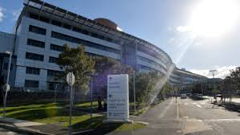

Electronic medical record crashed (33)

- In Australia, in the State of Queensland, several hospitals had been affected by a computer crash in September 2019. A similar accident occurred a month before in some other hospitals with the same software.
- ieMR is the name of this software, which is used for recording all the clinical data of the patients. With this software, it is possible to access the patient records at all times and their critical care needs from every hospital in Queensland. This program had a cost of $ 1.2 billion.
- On 8th September 2019 from 1 pm until after 6 pm the system crashed because of a software update. All the hospital staff couldn’t access or create new records and only several hours after the accident they received an emergency email with instructions to use paper records for new patients.
- This crash occurred a few days after the health Minister Steven Miles announced that until 2021 there will be no further software updates. The founding package for an update worth about $ 135 million. The Minister was sure that this trouble was caused by an error in use and not by a system error.
- An investigation into this crash of the electronic medical record software has been promised by the Queensland’s Premier Annastacia Palaszczuk. At the moment the financial costs of the crash are not known.